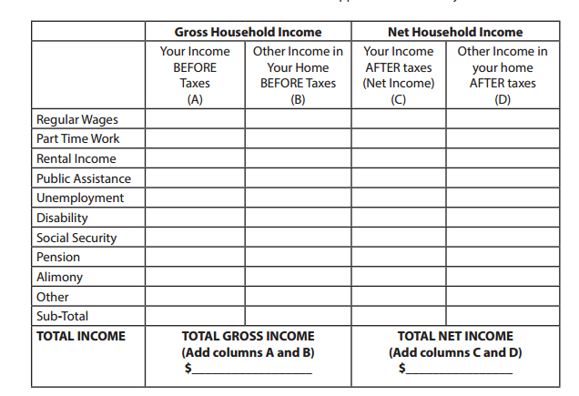
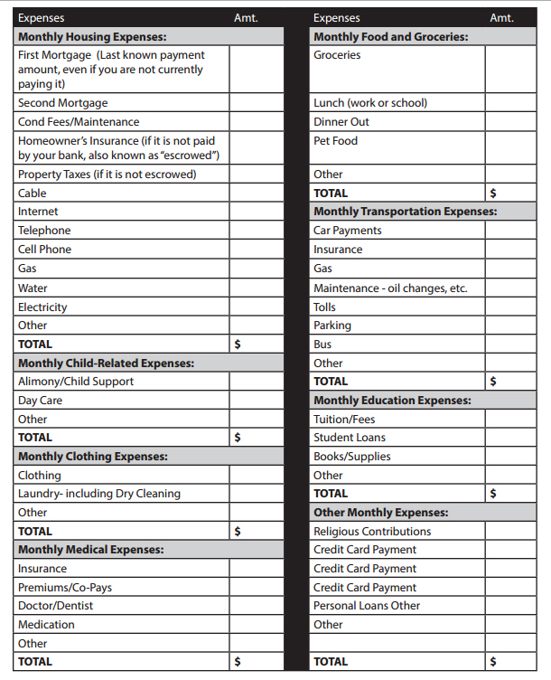
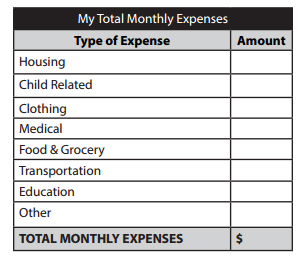
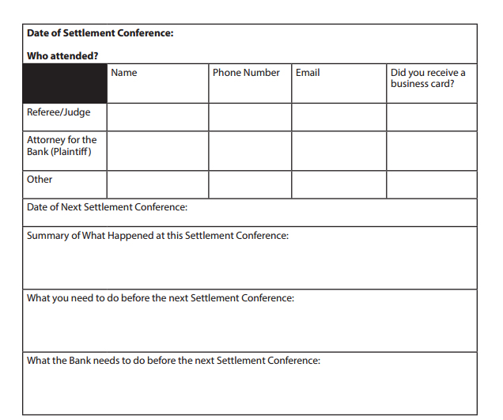

Located in the front folder of this guidebook is a list of your local HUD-approved housing counseling agencies. If other companies or individuals tell you that they can help save your home if you pay them money, you should be suspicious – often times these are scammers who are trying to make a quick dollar at your expense. High quality and expert services are available for free from the agencies listed in this guide, and we recommend you contact one of them if you are looking for help.
You are required to bring some documents with you to the Settlement Conference. There are other documents the Bank will require to review your loan. If you have already submitted these documents (often called a “loss mitigation” or “workout” package), you should expect to submit them again. You should also gather all the documents you received when you originally got the loan (referred to as the “loan documents” or “closing documents”) if you can locate them. A list of documents to gather is included below.
| ✓ | Documents to Gather |
|---|---|
| The last two months of pay stubs for everyone who regularly helps pay the mortgage | |
If you receive rental income: Copies of your current lease AND Schedule E in tax returns AND/OR Bank statements showing regular rental deposits AND/OR Copies of rent receipts you give to your tenants AND/OR Section 8 or other subsidy agreements | |
Tax returns for the last two years | |
If you receive money from the state (social security, disability payments, VA benefi ts etc) or a pension: Most recent award letter AND 3 months worth of bank statements showing deposits of this money OR 3 months worth of payment stubs | |
If you are self-employed you should If you are self-employed you should have a profi t and loss statement available for the last two quarters | |
If other people in your household are contributing to the household bills, copies of their paystubs/income documents | |
Your most recent utility bill that is listed in your name | |
Financial Form provided by the Bank | |
Hardship letter (This is a letter you write that explains why you fell behind. You should indicate in the letter if this was a temporary setback, or if this is a permanent change in your household income.) | |
Your most recent mortgage statement | |
Forbearance, loan modifi cation, or workout off ers you have received, regardless of whether you accepted or rejected them | |
All papers and letters you have received from the Court, the Bank, and the Bank’s attorney | |
Copies of your loan application (or the Uniform Residential Loan Application) | |
Your HUD-1 Settlement Statement | |
The Note and any riders (Balloon Rider or Adjustable Rate Rider) | |
Mortgage and riders | |
Truth-in-Lending Disclosure Statement | |
Good Faith Estimate | |
Your Deed | |
Most recent appraisal (if you have one) | |
Any other papers related to fees you paid at closing, either to your lender or your broker or anyone else |
If you cannot fi nd all these documents, you should still GO TO THE SETTLEMENT CONFERENCE. If there are documents the Bank provided to you when you initially got your loan (like the Note or the Mortgage) and you don’t have a copy, you can request a copy of them at the Settlement Conference.
The budget in this guide is only for your use. No one else is going to see it unless you show it to them. It is designed to help you make an honest assessment if you can aff ord to keep your home. This is also good preparation for meeting with your housing counselor and filling out your Bank’s fi nancial forms.
First, you need to compute your total monthly income. Listed below are the most common sources of income. You want to list all of your personal sources of income (Column A), as well as any other income from anyone else in your house if they are helping contribute to the mortgage (Column B).
Please remember that you MUST be able to verify all the sources of income you use in the budget. Your Bank will not consider sources of income without accompanying verification. If you are using another household member’s income in your budget, count that person’s expenses as well and make sure you have verification of their income.
Gross Household Income: Adding columns A and B gives you your “Total Gross Household Income.” This amount is $_______. Multiply this number by .31. This equals $_________, and we will refer to this as your “31% Payment”. Most of the large banks in the country have recently settled on 31% as being one of the main standards they use in determining if a payment is affordable – anything above 31% is often looked at as being too high. Therefore, your 31% Payment is an approximate amount you should
expect to pay in total for your fi rst mortgage, homeowners insurance, property taxes and condo fees/homeowners association fees.
Remember, there is no law that says you cannot pay more than 31% -- this is merely meant as a guide to give you a better idea of what many of the national banks have recently done. In addition, if you were paying less than this before you defaulted, be prepared for your mortgage payment to increase to this amount each month.
Net Household Income: Adding columns C and D gives you your “Total Household Net Income.” This amount is $_______. This is how much you actually receive each month, and the amount available to pay your bills.
Now that we have looked at your income, we need to compute your total monthly expenses. Included on the next page (page 20) is a list of typical household expenses you may have each month. Fill in each category as best you can. We realize that it often can be difficult to estimate certain categories, such as how much you spend on food each month. However, it is vital for you to fi ll this out as accurately as possible. The only way to make an accurate determination if you can afford your home is to look at what else you are spending your money on. You will likely have to fill out a very similar form for your Bank, so working on your budget now will help you.
Now take each of the subtotals from your expense list and copy them in below.
Next you need to calculate how much money you have after you pay all your bills, or how much more you are spending each month than you are earning. Take your Total Net Income, which you calculated earlier, and subtract your Total Monthly Expenses, which you just calculated

If this amount is negative, it is referred to as your “monthly defi cit”. If this amount is positive, it is referred to as your “monthly surplus”. If you have a monthly defi cit, do you see any sources of income that you can increase, or any expenses you may be able to cut back on? In addition, look at the 31% Payment we calculated earlier. If we plugged the 31% Payment amount into your budget in place of the current Monthly Mortgage Payment, would that be enough to turn your monthly defi cit into a monthly surplus? If not, you may not be able to aff ord your home and you should seriously consider other options (such as a “short sale” or a “deed-in-lieu of foreclosure”).
The reasons you ended up in foreclosure are probably long and complicated, and each borrower’s situation is slightly diff erent. The Settlement Conference is a chance for you to share your story with the Court and the Bank. By preparing to tell your story before the Settlement Conference, it is more likely you will tell your story in a way that everyone can understand. They need to know why you are in foreclosure, and what you have done to resolve your situation. The clearer you are to the Court and the Bank, the easier it will be to resolve the foreclosure. You should write out answers to the following questions:
You should also be able to talk about basic information about your loan, such as the following:
The current monthly payments are $_____. The current interest rate is: ______% and my interest rate (circle one) changes/does not change. I last made a payment on my loan in _______________ (list month and year).
Have you attempted to work with your Bank to find a solution already? If so, make a list below of all the people you have contacted, and the times you have sent in documents before the Settlement Conference.
NOTE TAKING PAGES: Bring this with you to all the Settlement Conferences you go to, and take notes during the conference.

Before you leave, try to summarize your understanding of what happened at the Settlement Conference, and what will happen next. Ask the Court to confi rm you are correct.
Before you leave, try to summarize your understanding of what happened at the Settlement Conference, and what will happen next. Ask the Court to confi rm you are correct.
If your loan can be modifi ed there are several ways your Bank will likely go about it. The Bank may do any of the following:
Regardless of which way the Bank considers, they typically will modify a loan by doing a “capitalization”. Capitalization occurs when items owed on a loan (e.g. past due interest, taxes, late charges, legal costs, etc.) are added to the unpaid principal balance of the loan and are treated as part of a new principal balance. In adding them to the unpaid principal balance, the Bank will cause the overall amount that is owed to the Bank on that loan to increase. The upside to a capitalization is that because all current outstanding charges have been rolled into the unpaid principal balance, the Borrower is now seen as current on their mortgage payments. By doing a capitalization, the homeowner does not have to make up all missed payments at one time
Any agreement you reach should clearly state how much you owe, what your interest rate will be going forward, what each charge is for, what your monthly payment will be, how long you will be making that payment, and what will happen if either side violates the agreement. Ask for a written explanation of any and all charges that are part of this loan modifi cation, and ask that attorney’s fees and late fees be reduced or waived.